Мексика - Мексиканский песо
20 песо
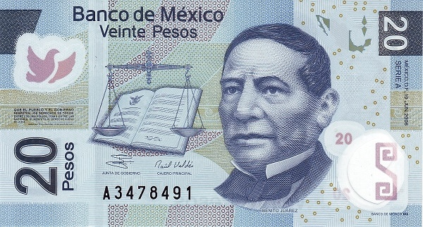 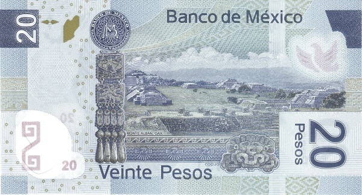Лицевая сторона - Бенито Хуарес
Обратная сторона - Руины бывшей столицы сапотеков в Монте-Альбане (Оахака)
50 песо
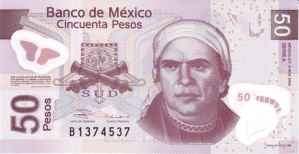 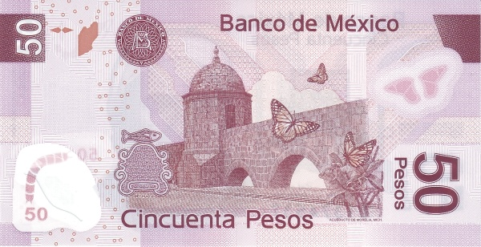Лицевая сторона - Хосе Мария Морелос и Павон
Обратная сторона - Акведук в Морелии (Мичоакан), бабочка вице-короля (limenitis archippus)
100 песо
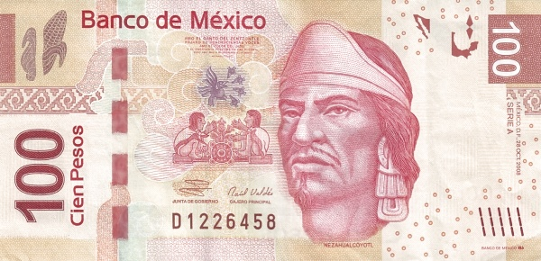 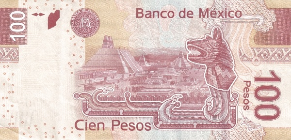Лицевая сторона - Несауалькойотль, Индиос
Обратная сторона - Руины Теночтитлана
200 песо
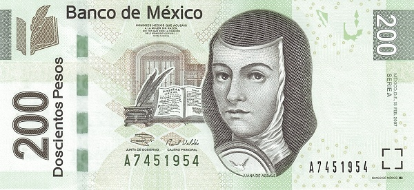 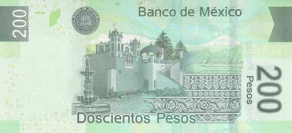Лицевая сторона - Хуана де Асбахе
Обратная сторона - Гасиенда Паноян
500 песо
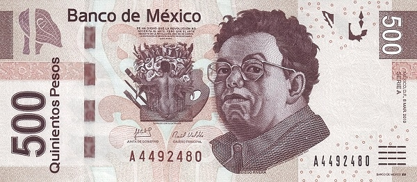 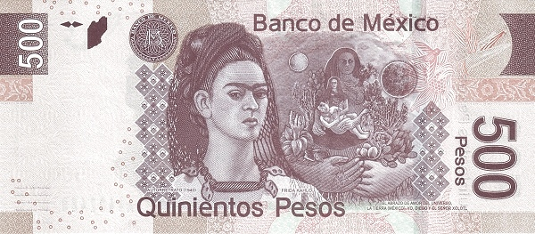Лицевая сторона - Диего Ривера, Картина "Desnudo con Alcatraces" (автор Ривера)
Обратная сторона - Фрида Кало, Часть картины "Объятия любви Вселенной, Земли (Мексика), меня, Диего и лорда Ксотл" (Кало)
1000 песо
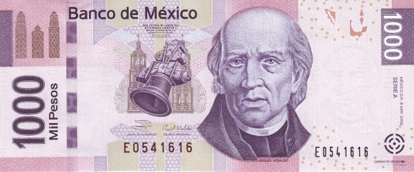 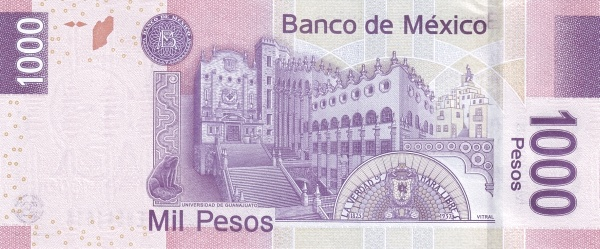Лицевая сторона - Мигель Идальго и Костилья
Обратная сторона - Университет Гуанахуато